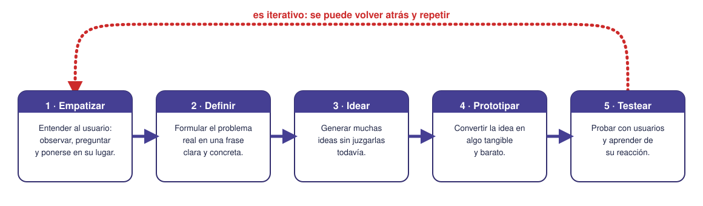
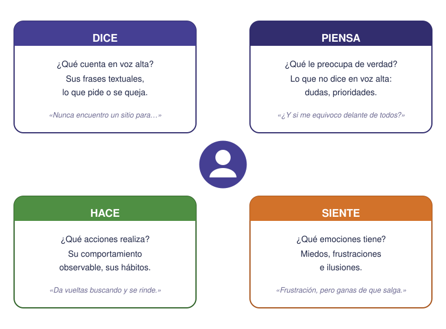
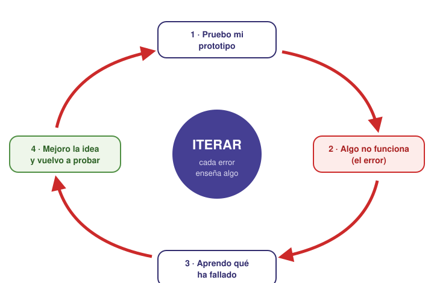

Contenido
En la sesión anterior tu equipo definió a quién quiere ayudar y qué problema va a resolver. Falta lo más importante antes de ponerse a planificar: ¿qué solución vamos a construir y cómo se nos ocurre? Esta sesión trata justo de eso. Y va aquí, y no más adelante, por una razón de peso: no se puede planificar un producto que todavía no se ha decidido. Primero se idea; a partir de la S4 se planifica.
Design Thinking: idear centrándose en las personas
Design Thinking (“pensamiento de diseño”) es una forma de idear soluciones que pone en el centro a la persona que tiene el problema, no a la tecnología. La idea de fondo es sencilla: una solución solo es buena si le sirve de verdad a alguien, así que lo primero es entender bien a ese alguien.
Se trabaja en cinco fases que, como verás, se pueden repetir:

- Empatizar. Entender de verdad al usuario: observar lo que hace, preguntarle y ponerse en su lugar. No se trata de imaginar qué necesita, sino de averiguarlo. La herramienta típica es el mapa de empatía (lo vemos abajo).
- Definir. Con lo aprendido, formular el problema real en una frase clara. Una buena forma de plantearlo es la pregunta «¿Cómo podríamos…?» (por ejemplo, «¿Cómo podríamos ayudar a quien llega nuevo al instituto a orientarse el primer día?»). Una pregunta bien definida ya es media solución.
- Idear. Generar muchas ideas mediante una lluvia de ideas (brainstorming). La regla de oro: primero cantidad, sin juzgar. Las ideas raras se anotan igual, porque a veces una idea “imposible” inspira otra que sí funciona. Solo después se eligen las mejores.
- Prototipar. Convertir la idea elegida en algo tangible y barato: un boceto, una maqueta de cartón, una pantalla dibujada a mano. El prototipo no tiene que ser bonito ni completo; solo lo bastante real para poder probarlo.
- Testear. Enseñar el prototipo a usuarios reales y aprender de su reacción. Lo que descubres aquí casi siempre te manda de vuelta a una fase anterior: a redefinir el problema, a idear de nuevo o a mejorar el prototipo.
Herramientas típicas de cada fase
Empatizar → mapa de empatía, entrevistas. Definir → la pregunta «¿Cómo podríamos…?». Idear → lluvia de ideas. Prototipar → bocetos y maquetas rápidas. Testear → enseñar el prototipo y recoger opiniones. No hace falta nada caro: un papel, notas adhesivas y ganas de preguntar bastan para empezar.
Empatizar: el mapa de empatía
El mapa de empatía es una plantilla para ordenar lo que sabemos del usuario antes de proponer nada. Se divide en cuatro partes y se rellena con lo que observamos y nos cuenta:

La gracia está en comparar los cuadrantes: muchas veces lo que alguien dice no coincide con lo que piensa o siente, y ahí, en esa diferencia, suele esconderse el problema real que conviene resolver.
El error como parte del proceso
Habrás notado que la flecha del proceso vuelve hacia atrás. Eso es lo más importante de Design Thinking: no se trata de acertar a la primera, sino de iterar. Cada prueba que sale mal no es un fracaso, es información: te dice qué cambiar para la siguiente vuelta.

Equivocarse pronto y barato
Es mejor descubrir un fallo con una maqueta de cartón que con el producto ya terminado: cuesta menos arreglarlo. Por eso en Design Thinking se prototipa rápido y barato, para equivocarse pronto y aprender cuanto antes. (Es la misma idea de mejora continua que reaparecerá en la retrospectiva de Scrum (S7) y en el kaizen de Lean (S8): equivocarse, aprender y volver a intentarlo es el motor de todo el proyecto.)
Idear es de todo el equipo
Aunque haya un rol de “diseño”, la fase de idear se hace en grupo: cuantas más cabezas, más ideas. El rol de diseño coordina la ideación y el prototipo, pero las ideas las pone todo el mundo.
Ejemplo aplicado
Un equipo quiere hacer una app para el huerto escolar. Tienen el reto definido, pero todavía no saben qué app exactamente. Antes de dibujar un solo calendario, hacen lo que toca: preguntar. Este equipo nos acompañará el resto de la unidad. Así aplican Design Thinking.
Empatizan: hablan con compañeros y compañeras que cuidan el huerto y rellenan un mapa de empatía. Descubren algo que no esperaban —en el cuadrante Siente— : la gente no se acuerda de regar porque le da apuro preguntar de quién es el turno. Definen entonces el problema con un «¿Cómo podríamos avisar del turno de riego sin que nadie tenga que preguntar?». Idean en una lluvia de ideas diez propuestas (desde un cartel hasta un sensor), sin descartar ninguna al principio. Eligen una y hacen un prototipo barato: una pantalla dibujada en papel con el aviso del turno. Al testearla, ven que confunde las fechas… así que vuelven atrás (iteran), la corrigen y la app queda más clara. El error de la primera pantalla les ahorró un fallo en la app final.
Todo esto lo anotan en su diario de equipo, que abrieron en la primera sesión: qué preguntaron, qué descubrieron y por qué eligieron esa idea y no otra. Cuando al final de la unidad tengan que defender su plan, lo tendrán escrito.
Tarea del proyecto
Idead vuestra solución
TRABAJO EN EQUIPO una sola entrega por equipo
Aplicad Design Thinking a vuestro reto y dejadlo registrado:
- Empatizad: dibujad el mapa de empatía de vuestro usuario en Excalidraw (pizarra online, sin instalar nada y sin cuenta). Cread cuatro zonas —Dice, Piensa, Hace, Siente— y rellenadlas con notas adhesivas.
- Definid el problema con una frase «¿Cómo podríamos…?».
- Idead: haced una lluvia de ideas en la misma pizarra (cuantas más, mejor) y elegid una para prototipar.
- Revisad los roles que repartisteis en la S1: ahora que sabéis qué vais a construir, ¿siguen teniendo sentido? Anotad en el diario de equipo los cambios y por qué.
Exportad la pizarra a PNG y añadidla, junto con la idea elegida, los roles y el diario, a la plantilla del plan de proyecto (enlace en la portada).
Ejercicios
Recuerda
TRABAJO INDIVIDUAL cada persona entrega el suyo
Resuelve primero en el cuaderno y luego pasa tus respuestas a tu copia de la plantilla en Drive (la que creaste desde la portada). Al terminar la unidad, descarga la plantilla en PDF (Archivo → Descargar → Documento PDF) y súbelo a la tarea Ejercicios de la unidad de Moodle. La tarea está abierta desde la primera sesión, pero no pulses «Entregar» hasta la última: es un solo documento con los ejercicios de las nueve.
- Escribe tres preguntas que harías a un usuario en la fase de empatizar para tu reto, y di qué cuadrante del mapa de empatía (Dice, Piensa, Hace o Siente) esperas conocer con cada una.
- Reformula el problema de tu reto con una pregunta «¿Cómo podríamos…?» bien definida.
- Haz una lluvia de cinco ideas distintas para resolverlo (sin descartar ninguna todavía); después marca la que elegirías para prototipar y explica por qué.
- Describe un prototipo barato de esa idea (qué harías con papel o materiales sencillos) y una cosa que querrías comprobar al testearlo.
- Explica con tus palabras por qué en Design Thinking equivocarse pronto es útil, y pon un ejemplo de un error que, bien aprovechado, mejoraría vuestro proyecto.
Lista desordenada
Ordena las cinco fases del Design Thinking. Recuerda que después se puede volver atrás en cualquier momento: el orden es el del primer recorrido.
- Empatizar: observar al usuario y preguntarle para entender su problema de verdad
- Definir: formular el problema real con una pregunta «¿Cómo podríamos…?»
- Idear: generar muchas ideas sin juzgarlas todavía
- Prototipar: convertir la idea elegida en algo tangible y barato
- Testear: enseñar el prototipo a usuarios reales y aprender de su reacción
Clasifica
El equipo del huerto ha entrevistado a quienes lo cuidan. Coloca cada observación en su cuadrante del mapa de empatía. Fíjate en la diferencia entre lo que alguien dice y lo que de verdad piensa o siente: ahí suele esconderse el problema real.